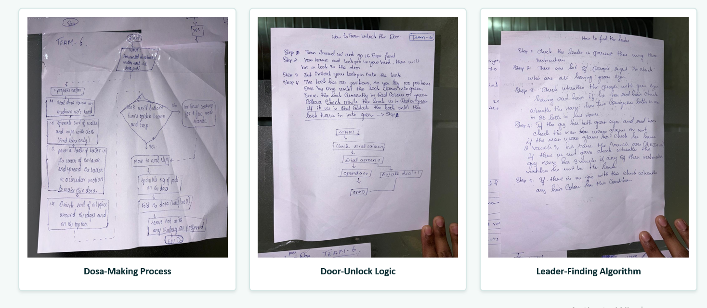
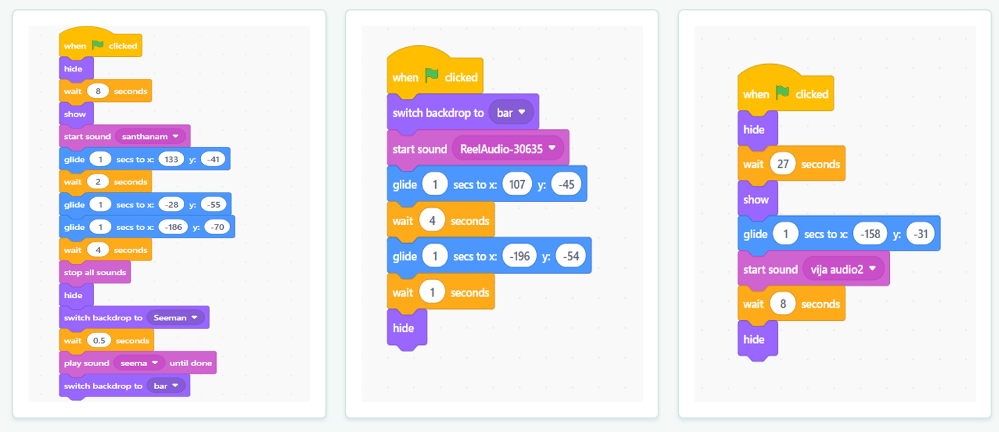
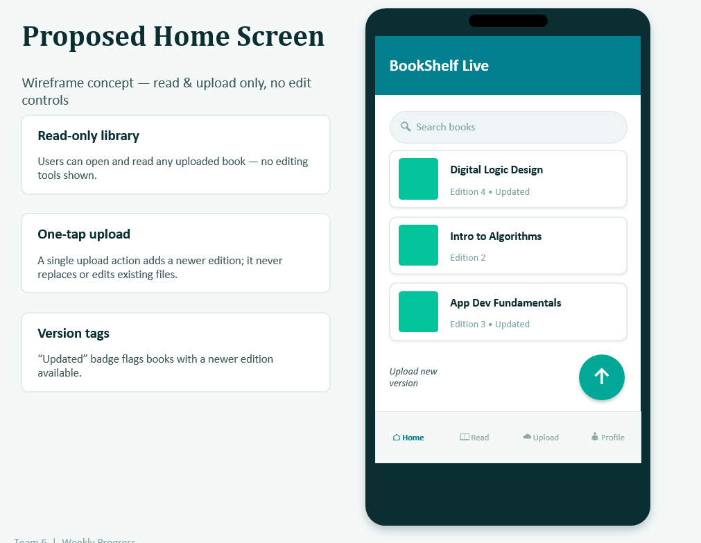

Week 2
Activities.




My journey
In Week 2 at Forge, we focused on developing our logical thinking, coding skills, creativity, and problem-solving abilities through a series of practical activities. We started with an Algorithmic Thinking exercise, where we learned how to break a problem into smaller and simpler steps and develop a logical sequence to solve it. This helped me understand the importance of structured thinking before starting to build a solution.
We then practiced Scratch coding, where we learned the basics of programming through a visual block-based environment. It was an interesting way to understand programming logic, loops, conditions, and sequences without focusing too much on complex syntax. We also worked on a project using MIT App Inventor, where we explored how to design a simple mobile application by combining user-interface elements with programming logic. This activity helped us connect our ideas with a working digital solution.
Another important learning session was conducted by Meera Mam on Applied Design Thinking. Through the session, we learned how design thinking can be applied to understand real problems from the user's perspective and develop practical solutions. We explored the importance of identifying the actual problem, understanding user needs, generating ideas, and developing solutions through an iterative process.
Overall, Week 2 helped me improve my logical thinking, programming fundamentals, creativity, and problem-solving approach, while also showing me how technology and design thinking can work together to create meaningful solutions.